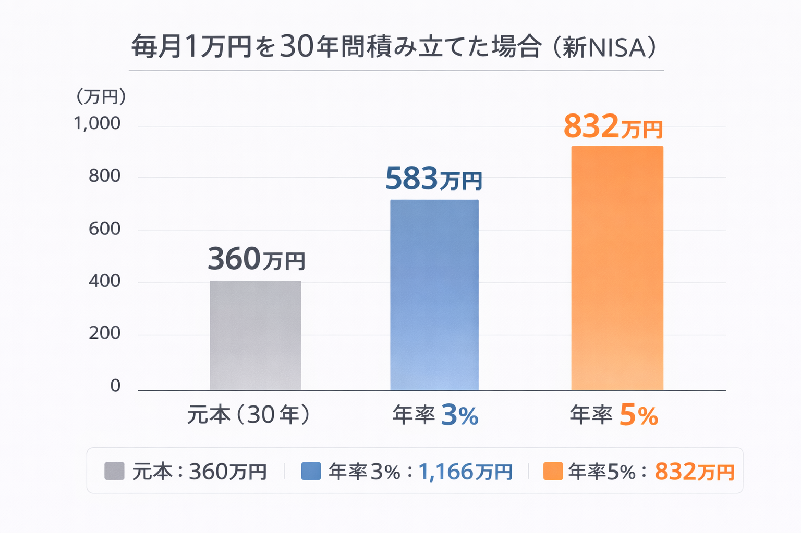
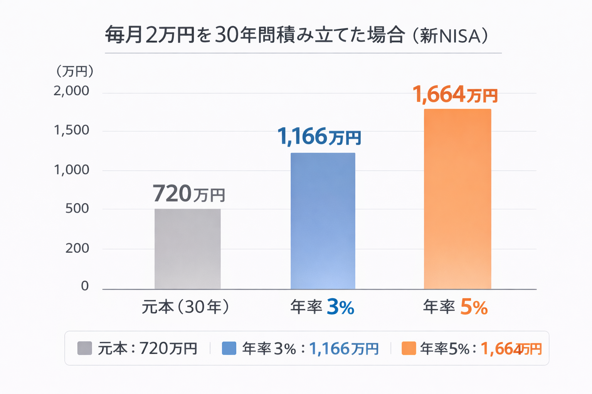
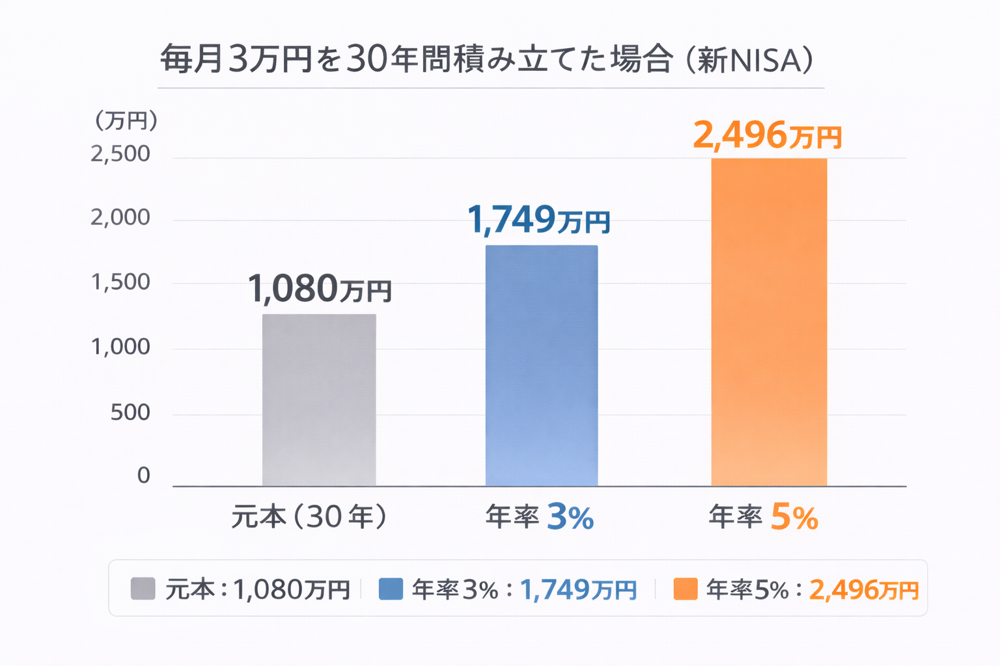

新NISAとは？毎月1万・2万・3万円積み立てたら30年後いくら？
このページで分かること
「新NISAを始めたいけど、毎月いくら積み立てればいいのか分からない」
「1万円でも意味ある？2万、3万だとどれくらい変わる？」
そんな疑問を、数字で整理するためのページです。
ここでは新NISAの概要を簡単に押さえたうえで、毎月1万・2万・3万円を30年間積み立てた場合の将来資産をシミュレーションします。
※シミュレーションは一定の利回りを仮定した概算であり、将来の成果を保証するものではありません。
新NISAとは（まずは簡単に）
新NISAは、投資で得た利益が非課税になる制度です。
長期・積立・分散を前提にしやすい仕組みなので、少額から始める人にも相性が良いのが特徴です。
ここでは制度の細部よりも、「毎月いくら積み立てるとどのくらいのイメージになるか」を優先して見ていきます。
シミュレーションの前提
- 積立期間：30年
- 積立頻度：毎月
- 想定年利：3% / 5%（一定と仮定）
- 複利運用（概算）
実際の利回りは上下します。ここでは「将来像をつかむための目安」として見てください。
毎月1万円を30年間積み立てた場合

毎月1万円を30年間続けると、元本は360万円です。
| 想定利回り | 将来資産（概算） |
|---|---|
| 年率 3% | 約 583万円 |
| 年率 5% | 約 832万円 |
1万円は小さく見えますが、「30年」という時間が加わると数字の形が変わります。
最初の目的は、増やすことよりも続けられる型を作ることです。
※元本とは、実際に自分が積み立てたお金の合計額のことです。 ここでは「1万円×12か月×30年＝360万円」を指します。 これに運用益が上乗せされるイメージです。
※利回りは一定ではなく、実際の運用成果を保証するものではありません。
毎月2万円ならどうなる？

毎月2万円を30年間続けると、元本は720万円です。
| 想定利回り | 将来資産（概算） |
|---|---|
| 年率 3% | 約 1,166万円 |
| 年率 5% | 約 1,664万円 |
積立額が2倍になると、将来資産も大きく変わります。
ただし、生活を圧迫する積立は続きにくいので、無理のない金額を優先してください。
毎月3万円の場合

毎月3万円を30年間続けると、元本は1,080万円です。
| 想定利回り | 将来資産（概算） |
|---|---|
| 年率 3% | 約 1,749万円 |
| 年率 5% | 約 2,496万円 |
金額が大きいほど期待値は上がりますが、相場変動の影響も受けやすくなります。
目標は「最大化」ではなく、継続できる最適化です。
このシミュレーションで分かること
- 積立は「利回り当て」ではなく「継続」のゲーム
- 金額は“背伸び”より“続く設計”が強い
- 迷ったら、まずは小さく始めて調整すればいい
始める前に確認したいこと
投資は余剰資金で行うのが基本です。
不安が強い方は、まず「不安の整理」と「失敗回避」を先に入れると、途中でブレにくくなります。
新NISAを利用できる主な証券会社（紹介ページ経由で公式サイトへ）
新NISAは多くの証券会社で利用できます。取扱商品や手数料、使いやすさに違いがあるため、 自分に合う環境を選ぶことが大切です。

※クリック or タップで各サービスの紹介ページへ移動します。取扱商品や手数料等は変更される場合があるため、最新情報は各公式サイトをご確認ください。
次に読むべきページ（比較へ）
新NISAを実際に始めるには証券口座が必要です。
焦って決める必要はありません。まずは一覧で整理して、自分に合う環境を確認してみてください。

よくある質問（FAQ）
-
毎月1万円でも意味はありますか？
あります。大切なのは金額よりも継続できる設計です。まずは小さく始めて、生活に無理がない範囲で調整するのが現実的です。 -
利回りは何％で考えるのが正しいですか？
将来の利回りは確定できません。このページではイメージを掴むために3%と5%を仮定していますが、実際の運用結果は変動します。 -
途中で下がったらやめた方がいいですか？
不安なときほど焦って判断しがちです。まずは「余剰資金で続けられる金額」になっているか確認し、必要なら積立額の見直しを検討しましょう。
ご利用にあたっての注意事項
本記事は情報提供を目的としており、投資の勧誘を目的としたものではありません。株式・投資信託・外国証券等の取引は元本保証がなく、相場変動等により損失が生じる場合があります。取引開始前に、契約締結前交付書面や商品説明書、目論見書等を必ずご確認のうえ、ご自身の判断と責任でお取引ください。